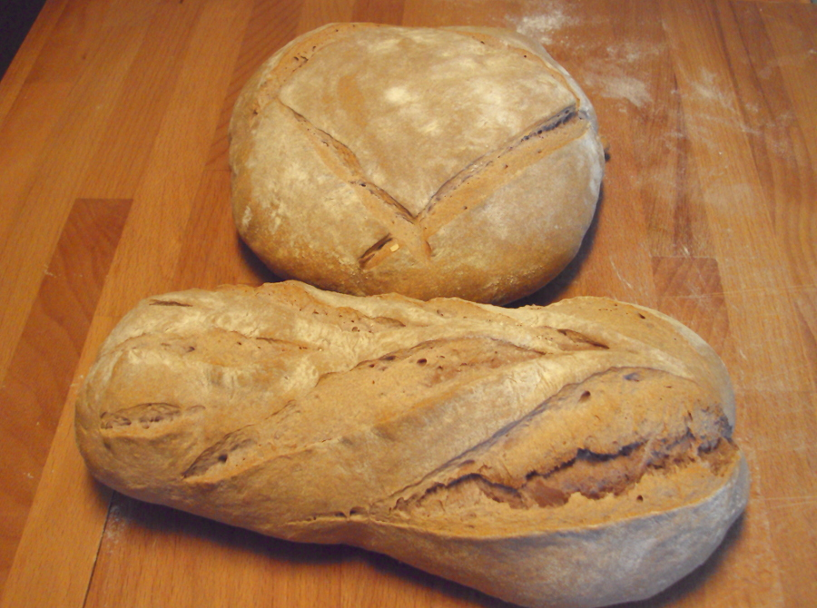

PAN DE MASA MADRE Y VINO
Ingredientes
- 150 g de polish
- 150 g de harina de fuerza
- 100 de agua mineral
- MASA:
- 300 ml de vino tinto estilo Rivera de Duero o Toro
- 3 cuch de azúcar
- 10 g de levadura de panadero
- 400 g de harina de fuerza y más si hace falta
- 10-12 g de sal

En un cuenco grande amasar durante unos minutos el polish –seguir la receta del enlace– con la harina y el agua del primer párrafo de los ingredientes. Esperar a que suba bastante. Estas masas madre nunca llegan a subir tanto como las de levadura de panadero, pero se hará evidente que ha subido y estará blandita, tierna y, si se hunde un poco la yema de un dedo, casi vuelve a recuperar la forma y borra el hueco que dejó.
Para hacer la masa del pan, añadir el vino, el azúcar y la levadura al cuenco en el que está la masa madre y batir para mezclar, aunque sea a medias. Añadir la harina revuelta con la sal y amasar muy bien durante unos 10-12 minutos. Pasar a la mesa y añadir más harina si estuviera muy líquida. Tiene que quedar suave, tierna, ni seca ni líquida. Enharinar el cuenco o la mesa y dejar la masa cubierta con un paño a que leve al doble. Pese a que lleva algo de levadura tampoco su levado será tan evidente, pero subirá al cabo del tiempo –unas 3-4 horas.
Romper la masa y dividirla en dos partes. Formar dos panes alargados o un pan y una hogaza, lo que se quiera. Dejarlas levar en la mesa el tiempo necesario para que , ahora sí, suban al doble. Depende de la temperatura y la humedad, pero puede ocurrir en 1 y 1/2 horas o en 2 horas.
Encender el horno a 200º C. Cortar los panes e introducirlos en la bandeja del horno, que ya estará caliente.

Cocerlos durante 30-35 minutos. Si se doran demasiado rápido, bajar el horno un poco. Depende de cada horno.

Sacar del horno y dejar enfriar. Al salir, los panes tendrán un olor desagradable, ácido, pero su sabor al enfriarse no es ácido en la boca y sí delicioso.

NOTA: Pan muy propio para servir con algunos platos de carne roja y con quesos de sabor muy fuerte.
La levadura es necesaria en esta masa pese a que se prepare con un prefermentado por la presencia del vino. En la costra dorada del pan no se nota mucho el color del vino, pero el interior es de un púrpura subido, como se ve en la imagen. Sorprendente.